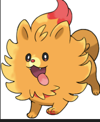
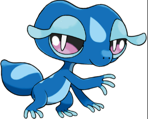
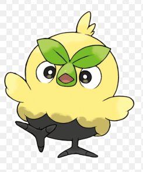

Por favor, a sua evolução não ande em duas patas. Um cachorrinho de fogo bem carismático, baseado na espécie Lulu da Pomerânia. É muito fofo, mas tem um medo constante na comunidade da forma final dele virar um bípide

Uma lagartixa molhada bem malandra. O favorito dos nerdolas, o gecko do tipo água tem muito potêncial

Um pássaro que parece muito pistola. Ele só parece com um personagem de "Angly birds" por causa das suas folhas no rosto que fazem parecer que ele está constantemente com raiva, mas o pássaro de grama é mais amigável do que parece